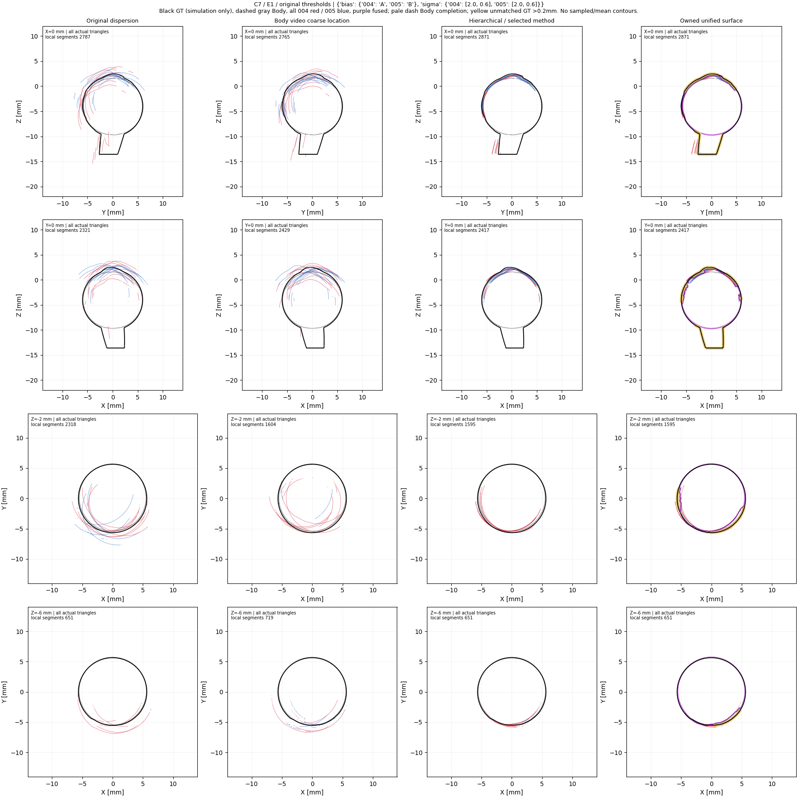
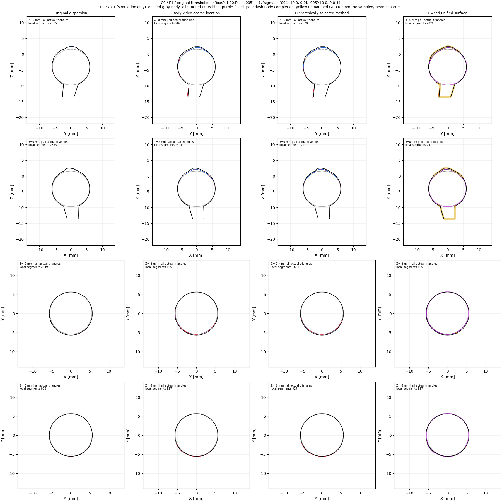
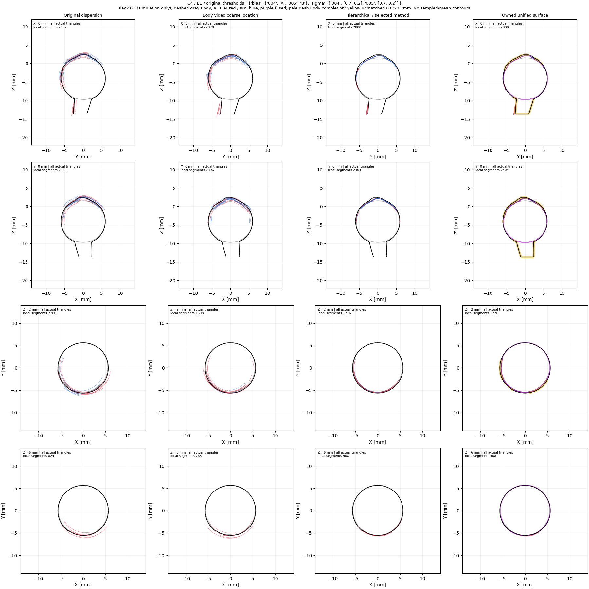
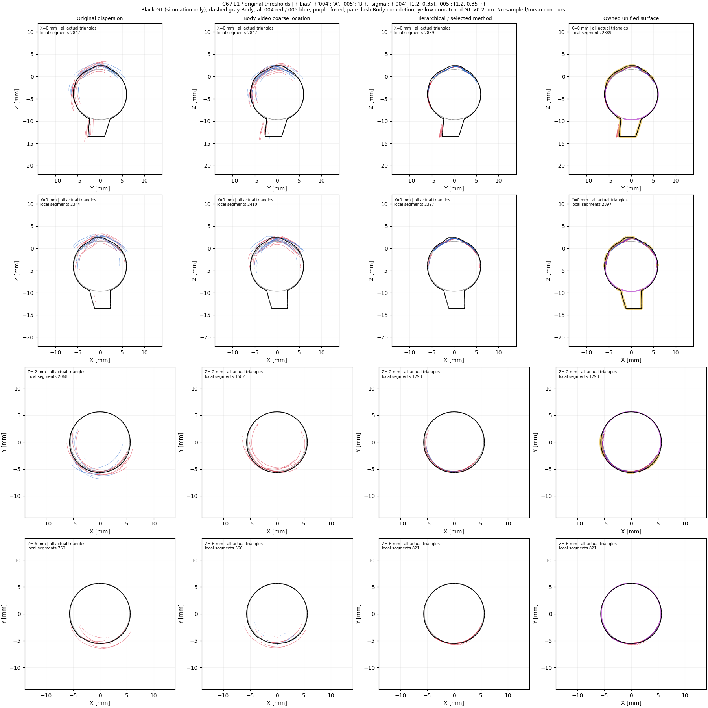
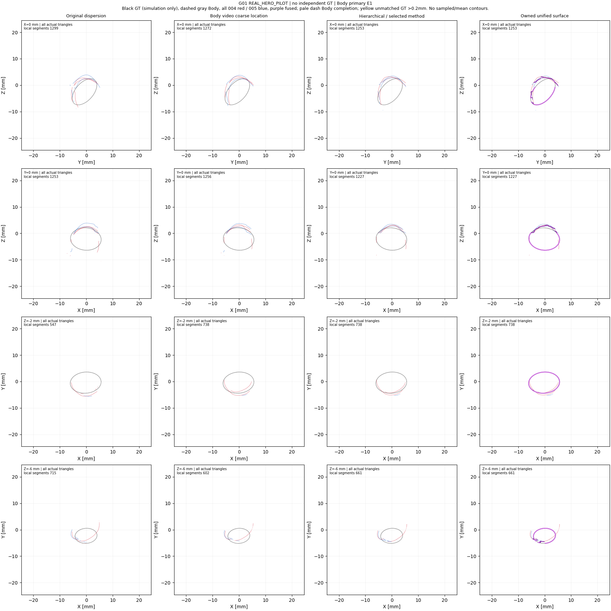
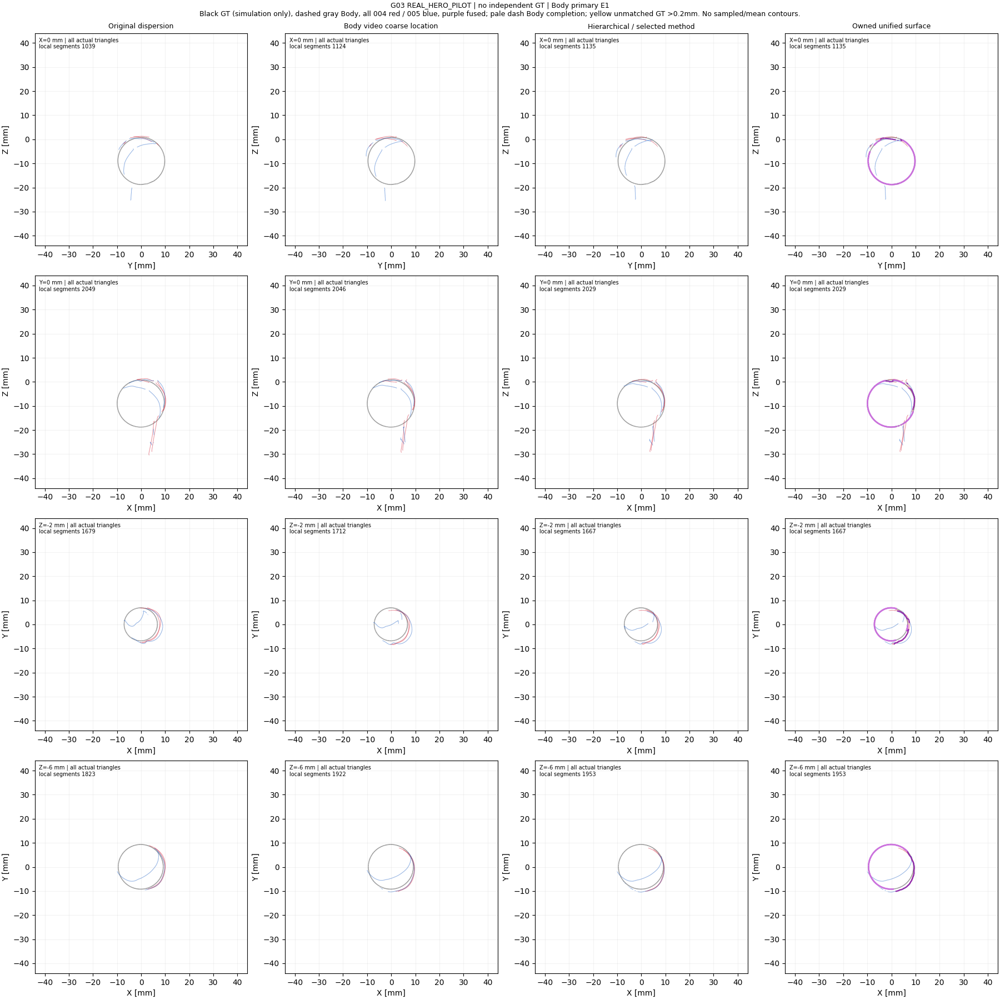
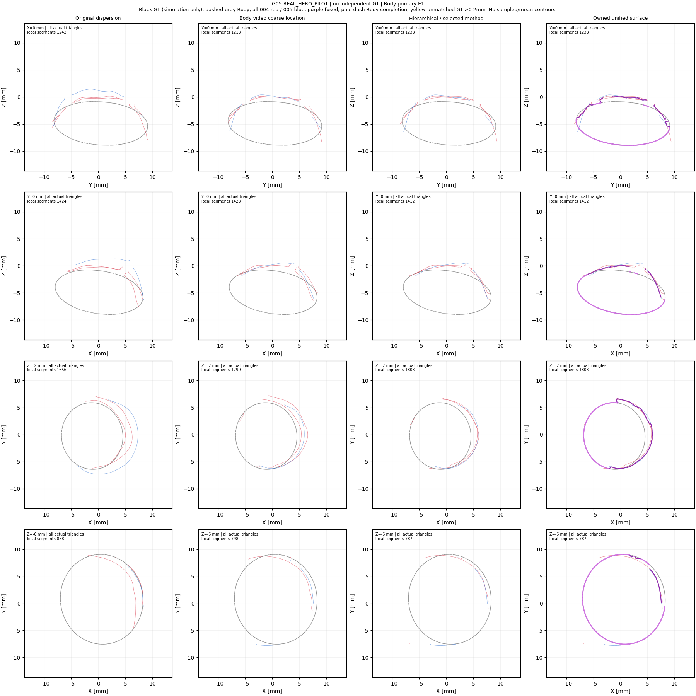

历史工程回归参考

原始分散→Body粗定位→分层配准→最终统一主面；全部真实三角面切面，非采样点/平均轮廓。GT仅仿真可得。

全部组合真实切面 · 仿真完整Mesh交互 · 技术报告 · 结果卡 · 仿真指标 · 真实指标 · 失败台账 · 运行清单






反例：C4/E1 分散下降但GT表面MAE恶化，不能将吸附到Body认作精确重建。 全部反例 · 真实方法对照 · 迁移成本